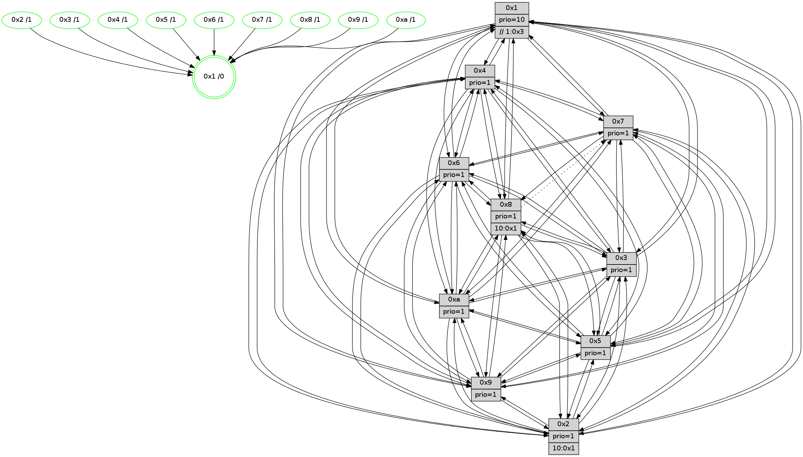

>> << IDX [start] -100 -25 -5 +0 +5 +25 +100 [1170.01495409]
 Previous packets
----------------------------------------------------------------------
1165.286162 beacon01(faad) #0 coord=01,02,03,04,05,06,07,0a,09,08 cycle=688.0ms assoc
-- color-indic=1 64 3b ac
1165.296145 beacon02(faad) #0 coord=01,02,03,04,05,06,07,0a,09,08 cycle=688.0ms assoc 64 a8 9d
1165.306145 beacon03(faad) #0 coord=01,02,03,04,05,06,07,0a,09,08 cycle=688.0ms assoc 64 d2 d0
1165.316145 beacon04(faad) #0 coord=01,02,03,04,05,06,07,0a,09,08 cycle=688.0ms assoc 64 a5 3a
1165.326145 beacon05(faad) #0 coord=01,02,03,04,05,06,07,0a,09,08 cycle=688.0ms assoc 64 df 77
1165.336145 beacon06(faad) #0 coord=01,02,03,04,05,06,07,0a,09,08 cycle=688.0ms assoc 64 51 a0
1165.346146 beacon07(faad) #0 coord=01,02,03,04,05,06,07,0a,09,08 cycle=688.0ms assoc 64 2b ed
1165.356152 beacon0a(faad) #0 coord=01,02,03,04,05,06,07,0a,09,08 cycle=688.0ms assoc 64 5a e6
1165.366150 beacon09(faad) #0 coord=01,02,03,04,05,06,07,0a,09,08 cycle=688.0ms assoc 64 d4 31
1165.376151 beacon08(faad) #0 coord=01,02,03,04,05,06,07,0a,09,08 cycle=688.0ms assoc 64 ae 7c
1165.388375 [Hello(1): seq=653 sym=4,2,9,5,10,3,8,6,7 sysInfo=coloring-mode-on,ColoringModeRequestCalled stat=4:5,2,3,5/2:7,7,5,2/9:2,2,4,8/5:1,5,12,7/10:14,0,10,6/3:10,10,14,6/8:4,15,15,3/6:7,13,6,13/7:6,2,1,14]
1165.391411 [Color(10) seq=333 @0:0 prio=1]
1165.394328 [Hello(5): seq=744 sym=7,6,4,3,1,9,8,10,2 sysInfo=hasWarning stat=7:3,12,8,13/6:1,3,9,2/4:1,5,15,13/3:5,15,0,13/1:9,2,3,1/9:5,0,1,9/8:14,15,12,2/10:6,14,15,8/2:15,1,1,6]
1165.396910 [Hello(3): seq=744 sym=1,7,6,2,4,8,9,10,5 sysInfo=hasWarning stat=1:7,3,11,0/7:9,4,14,12/6:5,11,1,0/2:3,6,2,0/4:3,1,1,11/8:5,0,11,4/9:2,8,4,14/10:11,4,12,4/5:6,9,8,15]
1165.400703 [Color(3) seq=373 @0:0 prio=1]
1165.404086 [Color(2) seq=320 @0:0 prio=1]
1165.406210 [Hello(6): seq=744 sym=2,3,5,4,7,9,8,10,1 sysInfo=hasWarning stat=2:11,3,3,7/3:11,4,15,11/5:7,11,1,1/4:4,10,11,5/7:7,3,6,12/9:7,0,5,8/8:9,7,0,5/10:1,2,4,12/1:13,4,14,1]
1165.410648 [Color(6) seq=376 @0:0 prio=1]
----------------------------------------------------------------------
1166.074296 beacon01(faad) #0 coord=01,02,03,04,05,06,07,0a,09,08 cycle=688.0ms assoc
-- color-indic=1 64 87 a9
1166.084277 beacon02(faad) #0 coord=01,02,03,04,05,06,07,0a,09,08 cycle=688.0ms assoc 64 14 98
1166.094279 beacon03(faad) #0 coord=01,02,03,04,05,06,07,0a,09,08 cycle=688.0ms assoc 64 6e d5
1166.104278 beacon04(faad) #0 coord=01,02,03,04,05,06,07,0a,09,08 cycle=688.0ms assoc 64 19 3f
1166.114279 beacon05(faad) #0 coord=01,02,03,04,05,06,07,0a,09,08 cycle=688.0ms assoc 64 63 72
1166.124280 beacon06(faad) #0 coord=01,02,03,04,05,06,07,0a,09,08 cycle=688.0ms assoc 64 ed a5
1166.134280 beacon07(faad) #0 coord=01,02,03,04,05,06,07,0a,09,08 cycle=688.0ms assoc 64 97 e8
1166.144283 beacon0a(faad) #0 coord=01,02,03,04,05,06,07,0a,09,08 cycle=688.0ms assoc 64 e6 e3
1166.154284 beacon09(faad) #0 coord=01,02,03,04,05,06,07,0a,09,08 cycle=688.0ms assoc 64 68 34
1166.164283 beacon08(faad) #0 coord=01,02,03,04,05,06,07,0a,09,08 cycle=688.0ms assoc 64 12 79
1166.177752 [Hello(10): seq=677 sym=6,2,3,8,7,5,9,4,1 sysInfo=hasWarning stat=6:1,15,2,6/2:14,9,3,10/3:0,7,7,11/8:7,5,12,2/7:6,8,3,6/5:9,6,14,14/9:8,15,4,3/4:15,7,4,0/1:10,10,8,1]
1166.180481 [Hello(8): seq=688 sym=5,2,3,4,9,6,7,10,1 sysInfo=hasWarning stat=5:9,14,4,0/2:2,4,2,10/3:13,9,5,15/4:13,3,8,10/9:3,7,9,3/6:11,6,3,13/7:14,15,3,0/10:2,13,10,4/1:11,11,14,0]
1166.184905 [Color(8) seq=343 @0:0 prio=1]
1166.186190 [Hello(9): seq=688 sym=2,5,3,4,7,6,8,10,1 sysInfo=hasWarning stat=2:8,7,12,8/5:1,8,12,5/3:12,0,2,15/4:8,9,2,0/7:0,0,3,1/6:8,13,9,11/8:14,4,15,3/10:14,13,3,4/1:8,3,0,1]
1166.189981 [Color(9) seq=317 @0:0 prio=1]
1166.194641 [Hello(4): seq=744 sym=5,7,6,2,3,9,8,10,1 sysInfo= stat=5:15,4,14,15/7:13,13,5,1/6:4,3,1,12/2:5,7,11,14/3:1,15,2,11/9:3,13,7,11/8:0,5,1,6/10:0,12,11,13/1:3,1,15,1]
1166.199081 [Color(4) seq=301 @0:0 prio=1]
1166.200710 [Hello(7): seq=744 sym=2,3,5,6,4,9,10,1 sysInfo=hasWarning stat=2:9,14,11,1/3:15,5,10,15/5:1,8,5,1/6:12,9,7,9/4:5,0,5,1/9:8,1,10,1/10:5,12,12,5/1:12,10,14,0]
1166.203088 [Color(1) seq=425 @0:0 prio=10 >>1.@6,1.@7,1.@8]
1166.204864 [Color(5) seq=338 @0:0 prio=1]
1166.207696 [Color(7) seq=290 @0:0 prio=1]
----------------------------------------------------------------------
1166.862432 beacon01(faad) #0 coord=01,02,03,04,05,06,07,0a,09,08 cycle=688.0ms assoc
-- color-indic=1 64 43 a7
1166.872415 beacon02(faad) #0 coord=01,02,03,04,05,06,07,0a,09,08 cycle=688.0ms assoc 64 d0 96
1166.882413 beacon03(faad) #0 coord=01,02,03,04,05,06,07,0a,09,08 cycle=688.0ms assoc 64 aa db
1166.892414 beacon04(faad) #0 coord=01,02,03,04,05,06,07,0a,09,08 cycle=688.0ms assoc 64 dd 31
1166.902415 beacon05(faad) #0 coord=01,02,03,04,05,06,07,0a,09,08 cycle=688.0ms assoc 64 a7 7c
1166.912414 beacon06(faad) #0 coord=01,02,03,04,05,06,07,0a,09,08 cycle=688.0ms assoc 64 29 ab
1166.922416 beacon07(faad) #0 coord=01,02,03,04,05,06,07,0a,09,08 cycle=688.0ms assoc 64 53 e6
1166.932421 beacon0a(faad) #0 coord=01,02,03,04,05,06,07,0a,09,08 cycle=688.0ms assoc 64 22 ed
1166.952420 beacon08(faad) #0 coord=01,02,03,04,05,06,07,0a,09,08 cycle=688.0ms assoc 64 d6 77
1166.964289 [Hello(5): seq=745 sym=7,6,4,3,1,9,8,10,2 sysInfo=hasWarning stat=7:3,13,8,13/6:2,4,9,2/4:1,5,15,13/3:6,0,0,13/1:9,2,3,1/9:5,0,1,9/8:14,15,12,2/10:7,14,15,8/2:15,2,1,6]
1166.968600 [Hello(2): seq=741 sym=4,5,7,6,3,9,8,10,1 sysInfo=hasWarning stat=4:1,6,6,11/5:10,5,12,0/7:11,2,7,14/6:8,14,12,11/3:14,10,11,8/9:9,9,0,7/8:5,5,6,11/10:4,4,1,10/1:0,11,10,0]
1166.972042 [Color(2) seq=321 @0:0 prio=1 >10.@1,1.@3,1.@4,1.@5]
1166.975291 [Hello(6): seq=745 sym=2,3,5,4,7,9,8,10,1 sysInfo=hasWarning stat=2:11,3,3,7/3:11,4,15,11/5:7,12,1,1/4:5,11,11,5/7:8,4,6,12/9:8,1,5,8/8:10,8,0,5/10:2,2,4,12/1:14,5,14,1]
1166.978763 [Color(6) seq=377 @0:0 prio=1]
1166.980078 [Hello(3): seq=745 sym=1,7,6,2,4,8,9,10,5 sysInfo=hasWarning stat=1:8,4,11,0/7:10,5,14,12/6:6,12,1,0/2:3,7,2,0/4:4,2,1,11/8:6,1,11,4/9:3,9,4,14/10:12,4,12,4/5:6,10,8,15]
1166.983559 [Color(3) seq=374 @0:0 prio=1]
1166.987040 [Color(10) seq=334 @0:0 prio=1]
----------------------------------------------------------------------
1167.650562 beacon01(faad) #0 coord=01,02,03,04,05,06,07,0a,09,08 cycle=688.0ms assoc
-- color-indic=1 64 ff a2
1167.660545 beacon02(faad) #0 coord=01,02,03,04,05,06,07,0a,09,08 cycle=688.0ms assoc 64 6c 93
1167.670545 beacon03(faad) #0 coord=01,02,03,04,05,06,07,0a,09,08 cycle=688.0ms assoc 64 16 de
1167.680546 beacon04(faad) #0 coord=01,02,03,04,05,06,07,0a,09,08 cycle=688.0ms assoc 64 61 34
1167.690544 beacon05(faad) #0 coord=01,02,03,04,05,06,07,0a,09,08 cycle=688.0ms assoc 64 1b 79
1167.700545 beacon06(faad) #0 coord=01,02,03,04,05,06,07,0a,09,08 cycle=688.0ms assoc 64 95 ae
1167.710545 beacon07(faad) #0 coord=01,02,03,04,05,06,07,0a,09,08 cycle=688.0ms assoc 64 ef e3
1167.720550 beacon0a(faad) #0 coord=01,02,03,04,05,06,07,0a,09,08 cycle=688.0ms assoc 64 9e e8
1167.730551 beacon09(faad) #0 coord=01,02,03,04,05,06,07,0a,09,08 cycle=688.0ms assoc 64 10 3f
1167.740550 beacon08(faad) #0 coord=01,02,03,04,05,06,07,0a,09,08 cycle=688.0ms assoc 64 6a 72
1167.753363 [Hello(10): seq=678 sym=6,2,3,8,7,5,9,4,1 sysInfo=hasWarning stat=6:1,15,2,6/2:14,9,3,10/3:0,7,7,11/8:8,6,12,2/7:7,9,3,6/5:10,7,14,14/9:9,0,4,3/4:0,8,4,0/1:10,11,8,1]
1167.756090 [Hello(4): seq=745 sym=5,7,6,2,3,9,8,10,1 sysInfo= stat=5:0,5,14,15/7:14,14,5,1/6:5,4,1,12/2:6,8,11,14/3:2,0,2,11/9:3,13,7,11/8:0,5,1,6/10:1,13,11,13/1:3,2,15,1]
1167.760368 [Hello(9): seq=689 sym=2,5,3,4,7,6,8,10,1 sysInfo=hasWarning stat=2:9,8,12,8/5:2,9,12,5/3:13,1,2,15/4:9,10,2,0/7:1,1,3,1/6:9,14,9,11/8:14,4,15,3/10:15,14,3,4/1:8,4,0,1]
1167.766079 [Hello(7): seq=745 sym=2,3,5,6,4,9,10,1 sysInfo=hasWarning stat=2:10,15,11,1/3:0,6,10,15/5:2,8,5,1/6:13,10,7,9/4:5,0,5,1/9:8,1,10,1/10:6,13,12,5/1:12,10,14,0]
1167.768769 [Color(7) seq=291 @0:0 prio=1]
1167.773762 [Color(5) seq=339 @0:0 prio=1]
1167.775812 [STC(1) #0.181 tree-change,inconsistent-stability,stable,to-color d=0]
1167.779092 [Hello(8): seq=689 sym=5,2,3,4,9,6,10,1 asym=7 sysInfo=hasWarning stat=5:10,15,4,0/2:3,5,2,10/3:14,10,5,15/4:14,4,8,10/9:4,8,9,3/6:12,7,3,13/10:3,14,10,4/1:11,12,14,0/7:15,0,3,0]
1167.783908 [Color(8) seq=344 @0:0 prio=1 >10.@1,1.@2,1.@3,1.@4]
----------------------------------------------------------------------
1168.438692 beacon01(faad) #0 coord=01,02,03,04,05,06,07,0a,09,08 cycle=688.0ms assoc
-- color-indic=1 64 cb ba
1168.448675 beacon02(faad) #0 coord=01,02,03,04,05,06,07,0a,09,08 cycle=688.0ms assoc 64 58 8b
1168.458674 beacon03(faad) #0 coord=01,02,03,04,05,06,07,0a,09,08 cycle=688.0ms assoc 64 22 c6
1168.468674 beacon04(faad) #0 coord=01,02,03,04,05,06,07,0a,09,08 cycle=688.0ms assoc 64 55 2c
1168.478674 beacon05(faad) #0 coord=01,02,03,04,05,06,07,0a,09,08 cycle=688.0ms assoc 64 2f 61
1168.488675 beacon06(faad) #0 coord=01,02,03,04,05,06,07,0a,09,08 cycle=688.0ms assoc 64 a1 b6
1168.498677 beacon07(faad) #0 coord=01,02,03,04,05,06,07,0a,09,08 cycle=688.0ms assoc 64 db fb
1168.508680 beacon0a(faad) #0 coord=01,02,03,04,05,06,07,0a,09,08 cycle=688.0ms assoc 64 aa f0
1168.518681 beacon09(faad) #0 coord=01,02,03,04,05,06,07,0a,09,08 cycle=688.0ms assoc 64 24 27
1168.528682 beacon08(faad) #0 coord=01,02,03,04,05,06,07,0a,09,08 cycle=688.0ms assoc 64 5e 6a
1168.542727 [Hello(5): seq=746 sym=7,6,4,3,1,9,8,10,2 sysInfo=hasWarning stat=7:3,13,8,13/6:3,5,9,2/4:1,5,15,13/3:7,1,0,13/1:9,2,4,1/9:5,0,1,9/8:15,0,12,2/10:8,15,15,8/2:0,3,1,6]
1168.545770 [Hello(3): seq=746 sym=1,7,6,2,4,8,9,10,5 sysInfo=hasWarning stat=1:8,5,12,0/7:11,6,14,12/6:6,12,1,0/2:3,7,2,0/4:5,2,1,11/8:7,1,11,4/9:4,10,4,14/10:13,5,12,4/5:7,11,8,15]
1168.548469 [Hello(6): seq=746 sym=2,3,5,4,7,9,8,10,1 sysInfo=hasWarning stat=2:11,3,3,7/3:12,5,15,11/5:8,13,1,1/4:6,11,11,5/7:9,5,6,12/9:9,1,5,8/8:11,9,0,5/10:3,3,4,12/1:14,5,15,1]
1168.551108 [STC(5)->1 #0.181 tree-change,inconsistent-stability,stable,to-color d=1]
1168.552870 [STC(3)->1 #0.181 tree-change,inconsistent-stability,stable,to-color d=1]
1168.554644 [STC(6)->1 #0.181 tree-change,inconsistent-stability,stable,to-color d=1]
1168.556225 [Hello(2): seq=742 sym=4,5,7,6,3,9,8,10,1 sysInfo=hasWarning stat=4:2,7,6,11/5:11,6,12,0/7:12,3,7,14/6:9,15,12,11/3:15,11,11,8/9:10,9,0,7/8:6,5,6,11/10:5,5,1,10/1:0,11,11,0]
1168.559042 [STC(2)->1 #0.181 tree-change,inconsistent-stability,stable,to-color d=1]
1168.561226 [Color(6) seq=378 @0:0 prio=1]
1168.563060 [Color(2) seq=322 @0:0 prio=1 >10.@1,1.@3,1.@4,1.@5]
1168.566122 [TreeStatus(3)-.->1 #0.181 tree-change,inconsistent-stability,stable child=1]
1168.567954 [Color(3) seq=375 @0:0 prio=1]
1168.571022 [STC(10)->1 #0.181 tree-change,inconsistent-stability,stable,to-color d=1]
1168.573932 [Color(10) seq=335 @0:0 prio=1]
----------------------------------------------------------------------
1169.226822 beacon01(faad) #0 coord=01,02,03,04,05,06,07,0a,09,08 cycle=688.0ms assoc
-- color-indic=1 64 77 bf
1169.236804 beacon02(faad) #0 coord=01,02,03,04,05,06,07,0a,09,08 cycle=688.0ms assoc 64 e4 8e
1169.246806 beacon03(faad) #0 coord=01,02,03,04,05,06,07,0a,09,08 cycle=688.0ms assoc 64 9e c3
1169.256806 beacon04(faad) #0 coord=01,02,03,04,05,06,07,0a,09,08 cycle=688.0ms assoc 64 e9 29
1169.266806 beacon05(faad) #0 coord=01,02,03,04,05,06,07,0a,09,08 cycle=688.0ms assoc 64 93 64
1169.276806 beacon06(faad) #0 coord=01,02,03,04,05,06,07,0a,09,08 cycle=688.0ms assoc 64 1d b3
1169.286806 beacon07(faad) #0 coord=01,02,03,04,05,06,07,0a,09,08 cycle=688.0ms assoc 64 67 fe
1169.296812 beacon0a(faad) #0 coord=01,02,03,04,05,06,07,0a,09,08 cycle=688.0ms assoc 64 16 f5
1169.306810 beacon09(faad) #0 coord=01,02,03,04,05,06,07,0a,09,08 cycle=688.0ms assoc 64 98 22
1169.316811 beacon08(faad) #0 coord=01,02,03,04,05,06,07,0a,09,08 cycle=688.0ms assoc 64 e2 6f
1169.328366 [Hello(10): seq=679 sym=6,2,3,8,7,5,9,4,1 sysInfo=hasWarning stat=6:1,15,2,6/2:14,9,3,10/3:0,7,7,11/8:9,6,12,2/7:8,10,4,6/5:11,8,14,14/9:10,1,4,3/4:1,8,4,0/1:10,11,9,1]
1169.331094 [Color(5) seq=340 @0:0 prio=1]
1169.332555 [Hello(7): seq=746 sym=2,3,5,6,4,8,9,10,1 sysInfo=hasWarning stat=2:11,0,12,1/3:1,7,11,0/5:3,9,6,1/6:14,11,8,9/4:5,0,5,1/8:0,0,0,0/9:8,1,10,1/10:7,14,13,5/1:12,10,15,0]
1169.335876 [Hello(8): seq=690 sym=5,2,3,4,9,6,10,1 asym=7 sysInfo=hasWarning stat=5:11,15,5,0/2:4,6,3,10/3:15,11,6,0/4:14,4,8,10/9:4,8,9,3/6:13,8,4,13/10:4,15,11,4/1:11,12,14,0/7:15,0,3,0]
1169.338374 [Color(7) seq=292 @0:0 prio=1]
1169.346395 [Color(1) seq=427 @0:0 prio=10 >>1.@3,1.@4,1.@5]
1169.348277 [Hello(4): seq=746 sym=5,7,6,2,3,9,8,10,1 sysInfo= stat=5:1,6,15,15/7:15,15,5,1/6:6,5,2,12/2:7,9,12,14/3:3,1,3,12/9:3,13,7,11/8:1,6,1,6/10:2,14,12,13/1:3,2,0,1]
1169.351410 [Color(4) seq=303 @0:0 prio=1]